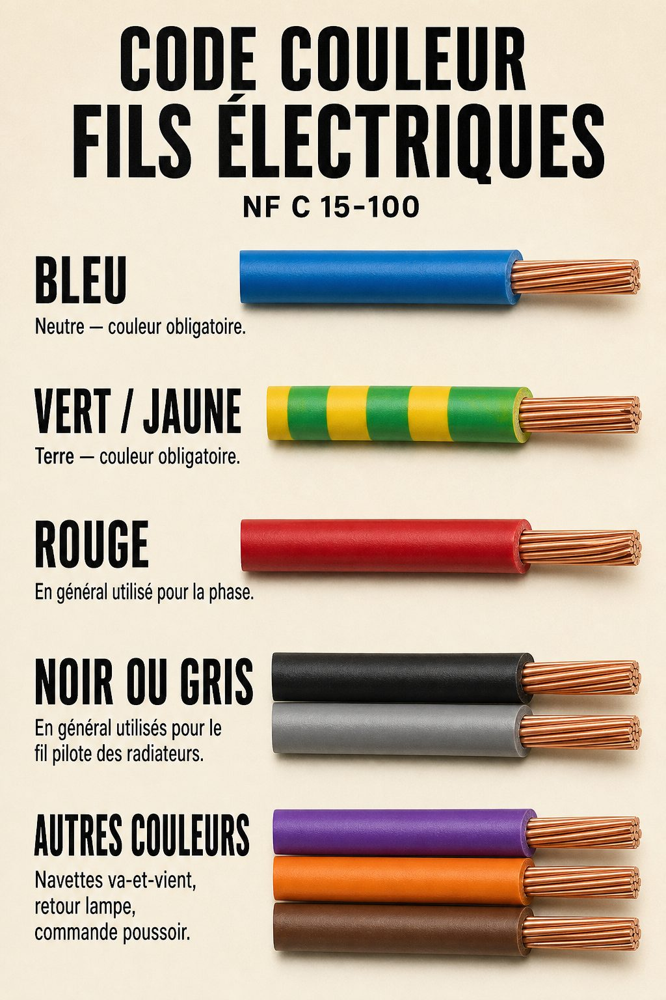

Schéma électrique
Tableau → araignée → tout
Même câblage, vue « étoile » classique.
Schéma novice · couleurs réelles NF C 15-100
Exemple couloir : interrupteurs aux murs, boîte au plafond, 1 à 4 éclairages. L’appli montre le parcours et le détail des Wago dans la boîte — là où on se trompe le plus souvent.
Exemple couloir
Survolez un fil ou une Wago : tout le groupe de la même couleur s’allume partout.
Le plus important
Vue du plafond, couvercle enlevé. Chaque Wago = un seul groupe de couleur. Ne mélangez jamais deux couleurs.
Dans le tableau électrique
Disjoncteur, module, puis départ vers la boîte — avec les vraies couleurs.
Schéma électrique
Même câblage, vue « étoile » classique.
Ordre de branchement
Dos des appareils
Regardez le mécanisme, pas la plaque. Les bornes sont marquées L, P, 1, 2…
À tirer
À prévoir
Schneider · vue arrière
Mécanisme type Odace / Schneider. Les 2 fils viennent de l’araignée ; le télérupteur est dans le tableau RESI9.
Infos complémentaires
Rappel NF C 15-100. Bleu et vert/jaune sont réservés. Les autres couleurs sont libres — y compris sur un câble préfilé.

Câble préfilé 5G (marron, rouge, noir, bleu, vert/jaune) : conforme pour un télérupteur si bleu = neutre, vert/jaune = terre, et que vous notez clairement rouge = retour lampes, noir = commande poussoirs (ou l’inverse, mais partout pareil).